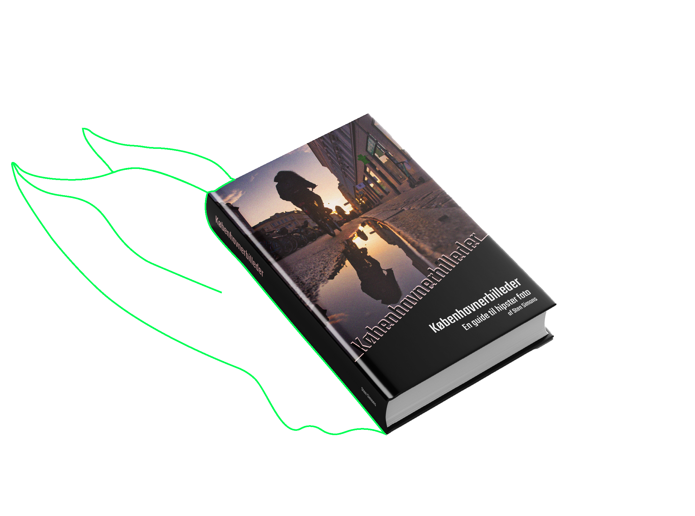
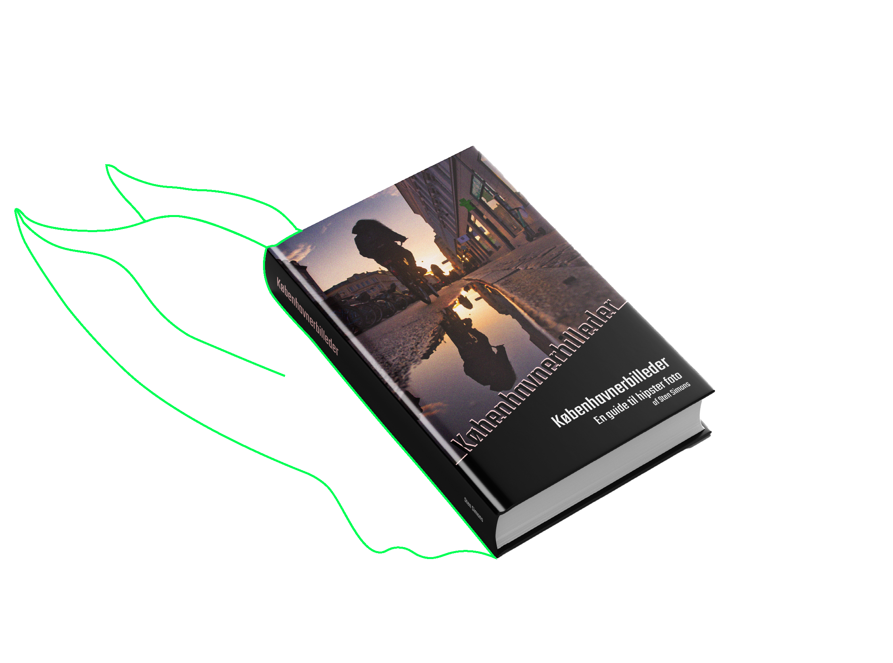

En guide til hipsterfotos
Af Steen Simons
Københavnerbilleder er de danske streetfotografers bibel. Det er en
fusion mellem et kunstværk og en lærebog.
Bogen gennemgår alle væsentlige aspekter af streetfotografering fra
grundlæggende teknik til kreative eksperimenter. Alt sammen krydret
med masser af inspirerende fotos.
God læselyst!


Teksten er underholdende, og billederne er sku’ flotte. Hvad mere
skal man sige om en fotobog?
Kim Kloggaard, Fotojournalen.dk
Københavnerbilleder er en grundig introduktion til at skyde
billeder med retro-kant. Hvad enten du er har arbejdet med foto
siden 135-filmen kom på markedet, du kun har skudt digitalt eller
er helt nybegynder, er der masser af tips og tricks i bogen.
Hanne Hovgaard, Berlingeren
Steen Simons kan det der - og han bliver bedre og bedre. Stens
tredje fotobog er klart den bedste - her er han for alvor i sit
rette element, meget bedre end “studiefotografering som
begyndere.” Tillykke - godt arbejde.
Volmer Hansen, Lukkertiden.dk
Steen
Simons
Steen Simons har en lang foto-karriere bag sig. Det hele startede i 00’erne, da han gik rundt i Pisserenden for at fotografere ungdommens forfald. Det ledte til en række udstillinger, og blev senere til hans først fotobog “Ungdomsdruk - pinlige billeder fra nattelivet.” Derefter tog karrieren fart: Han blev fotojournalist og dokumenterede en masse dagligdagsstof fra Amager på dagbladet “Amagerkaneren.” Sideløbende begyndte han at undervise i foto, og har skrevet et utal af bøger, herunder bestsellerne Scener fra S-toget, Brun mad - en visuel odysse, og lærebogen Fotografering for evnesvage.